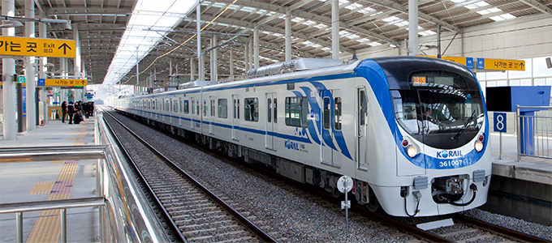
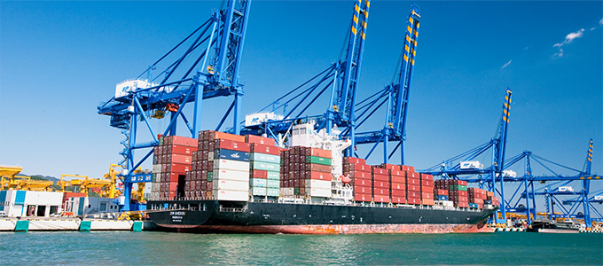

체계화된 고속복합교통망
- Home
- 투자 강점
- 체계화된 고속복합교통망
체계화된 고속복합교통망
대전고속도로, 철도, 항만 등 핵심인프라가 수도권과 전국을 완벽하게 연결하고 있으며 동북아시아 여러도시에서 비행기로 2시간 이내에 연결되는 탁월한 접근성을 자랑합니다.
-
고속도로 확장/연장
- 동서고속도로(서울-양양) 건설 : 서울-동홍천간 완공, 동홍천-양양간 2016년 개통
- 제2영동고속도로(경기광주-원주) 건설 : 2016년 개통
- 동해고속도로(삼척-속초) 건설 : 2015년 개통
-

 철도망 확충
철도망 확충- 동서고속철도(춘천-속초) 건설 예정
- 경춘선(서울-춘천) 복선전철 : 2012년 고속전동차(ITX청춘) 운행
- 중앙선(덕소-원주) 복선전철 개통
- 원주-강릉 복선전철 2017년 개통
- 동해 중부선 (포항-삼척) : 2019년 개통 (일부구간 개통)
- 수도권 교외선 철도 건설 (서울 신촌-연천 신탄리-철원 대마리) 개통
-
국도 확장/연장
- 국도 5호 (원주-철원)
- 국도 7호 (삼척-고성)
- 국도 31호 (영월-양구)
- 국도 38호 (제천-동해) 등 12개 노선
-
항공 : 2018년 양양국제공항 운항계획
-
국제선 : 16개 노선 (중국 9, 일본 1, 러시아 2, 대만 1, 베트남 3)※중국 : 북경, 항주, 하얼빈 등
※러시아 : 블라디보스토크, 하바롭스크 -
국내선: 4개 노선 (제주, 김해, 인천, 김포)※중국단체관광(3명 이상) 제주도 입도 조건 면제 15일간 무비자 관광가능(‘17.7.1~‘18.4.30.)
-
-

 항로
항로-
동북아 관광·물류네트워크(항로) 구축
- DBS 크루즈 훼리 항로 : 동해·묵호항~일본 사카이미나토, 러 블라디보스톡
- 속초~자루비노(러)·훈춘(중) 항로 : 속초~자루비노·훈춘, 자루비노~러 블라디보스톡
-
신규항로 개설 계획
- 동해·묵호항 : 동해~일본 쓰루가
- 속초항 : 속초~일본 기타큐슈
-